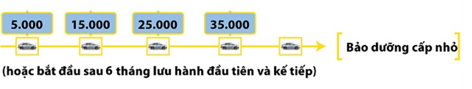
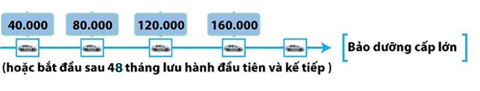
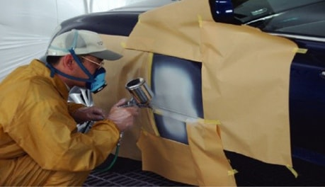

Chính sách bảo hành
1.Thời hạn bảo hành
Chế độ bảo hành bắt đầu được tính ngay kể từ thời điểm xe được giao
cho chủ xe đầu tiên. Trong vòng 36 tháng hoặc 100.000 km, tùy thuộc điều kiện nào đến trước, Toyota
đảm bảo sẽ sửa chữa hoặc thay thế bất kỳ phụ tùng nào của xe Toyota mới bị hỏng hóc.
- Bảo hành
ắc quy: Thời hạn bảo hành cho ắc quy là 12 tháng hoặc 20.000 km tùy điều kiện nào tới trước.
- Bảo hành ắc quy hybrid: Thời hạn bảo hành ắc quy hybrid là 36 tháng hoặc 100.000 km, tùy điều kiện nào đến trước.
- Bảo hành lốp: Bảo hành lốp: Ðược bảo hành theo chế độ riêng của nhà sản xuất lốp. Để biết thêm chi tiết, xin quý khách vui lòng tham khảo những trang web sau: Bridgestone, Dunlop, Michelin.
2. Điều kiện bảo hành
Toyota chỉ đảm bảo sửa chữa, thay thế các phụ tùng của xe Toyota mới bị hỏng hóc trong điều
kiện:
- Xe hoạt động trong điều kiện bình thường
- Nguyên liệu phụ tùng không tốt
- Lỗi lắp
ráp
- Trừ những điều kiện ghi trong mục NHỮNG GÌ KHÔNG ĐƯỢC BẢO HÀNH
Chú
ý: Bảo hành vẫn áp dụng khi xe được chuyển nhượng cho những chủ xe khác.
3. Phạm vi áp dụng bảo hành
Bảo hành chỉ áp dụng trong phạm vi nước
Cộng hòa Xã hội chủ nghĩa Việt Nam.
4. Bảo hành miễn phí
Mọi sửa chữa thuộc chế độ bảo hành (phụ tùng, công lao
động) là miễn phí.
1. Những yếu tố ngoài kiểm soát của nhà sản xuất
- Những sửa chữa hay điều chỉnh do sử dụng sai (đua xe, chở quá tải), cẩu thả, tự ý sửa đổi, biến cải, đấu nối, tháo ngắt, sửa chữa điều chỉnh không đúng kỹ thuật, tai nạn, tự ý lắp thêm phụ tùng/phụ kiện, không thuộc chế độ bảo hành.
- Ăn mòn do hóa mỹ phẩm hoặc ăn mòn bề mặt xe do bị đá bắn hoặc xước sơn không được bảo hành.
- Hư hại hay bị ăn mòn do môi trường như mưa axit, hóa chất, nhựa cây, muối, mưa đá, mưa bão, sấm chớp, ngập lụt và những tác động tự nhiên khác không được bảo hành.
2. Không bảo dưỡng xe dùng sai nguyên
liệu, dầu bôi trơn
Sửa chữa, điều chỉnh do bảo dưỡng xe không phù hợp, không bảo dưỡng hay dùng nhiên liệu, dầu bôi trơn khác với những loại ghi trong cuốn "Hướng dẫn sử dụng" không thuộc chế độ bảo hành.
3. Chi phí bảo dưỡng thuộc trách nhiệm
của chủ xe
Những công việc hiệu chỉnh động cơ, thay dầu bôi trơn, rửa xe, đánh bóng, thay bầu lọc, nước làm mát, dung dịch điện phân, ga điều hòa, nhiên liệu, các loại dầu mỡ, chất phụ gia, bugi, cầu chì, bóng đèn (trừ bóng halogen, bóng HID, bóng liền chóa), dây đai dẫn động (trừ dây đai cam), cao su gạt nước, má phanh, đĩa côn đã mòn là việc bảo dưỡng thường xuyên yêu cầu cho mọi loại xe. Những hạng mục bảo dưỡng trên không thuộc chế độ bảo hành.
4. Tiếng động bình thường, xe rung, giảm
giá trị tự nhiên
Tiếng động bình thường, xe rung, sự ăn mòn hay bị giảm giá trị tự nhiên như ngả màu, biến dạng, tỳ vết, không được bảo hành.
5. Thay đổi đồng hồ đo quãng
đường
Mọi hỏng hóc đối với chiếc xe nào đã bị thay đổi hay điều chỉnh đồng hồ công-tơ-mét dẫn đến không xác định được số đo chính xác đều không được bảo hành.
6. Chi phí phụ
Thiệt hại phụ hoặc hậu quả kèm theo như gọi điện thoại, mất thời gian, nhỡ việc hay thiệt hại về thương mại không thuộc chế độ bảo hành.
1. Ðưa xe đến bảo hành
Quý khách có trách nhiệm đưa xe của mình đi đến bất kỳ
Ðại lý / Trạm dịch vụ bảo hành và sửa chữa được Toyota ủy quyền tại Việt Nam để bảo hành.
2. Bảo dưỡng xe
Chủ xe có trách nhiệm sử dụng xe, bảo
dưỡng xe một cách hợp lý và quan tâm tới xe theo đúng những chỉ dẫn ghi trong cuốn "Hướng dẫn sử
dụng".
Nếu xe của Quý khách được sử dụng trong điều kiện khắc nghiệt, Quý khách càng phải chú ý
bảo dưỡng xe như yêu cầu trong cuốn "Hướng dẫn sử dụng".
3. Ghi lại những lần bảo dưỡng
Quý khách có trách nhiệm
ghi lại tất cả những lần bảo dưỡng xe. Ðiều này cần thiết vì trong một số trường hợp nó chứng tỏ Quý
khách đã bảo dưỡng xe theo như yêu cầu.
1. Nơi nhận dịch vụ bảo hành
Ðại lý / Trạm dịch vụ bảo hành ủy quyền chính hãng của Công ty ô tô Toyota Việt Nam sẽ là nơi thực hiện những sửa chữa cần thiết, sử dụng những phụ tùng mới hoặc những phụ tùng tái chế cho xe của khách hàng nằm trong chế độ được bảo hành. Để đạt được sự chăm sóc tốt nhất và giúp cho xe của Quý khách hàng được theo dõi thành một quy trình, Toyota khuyên Quý khách hãy trở lại Đại lý / Trạm dịch vụ bảo hành đã thực hiện bán xe cho Quý khách.
2. Ði du lịch / Di
chuyển sang nước khác
Nếu Quý khách đi du lịch hoặc di chuyển sang nước khác và xảy ra trường hợp xe bị hỏng hóc, hãy liên hệ với Ðại lý Toyota ở địa phương. Tuy vậy, xin lưu ý rằng, dịch vụ bảo hành có thể không được cung cấp bởi Đại lý tại địa phương, vì xe Toyota của Quý khách có thể không tuân thủ theo quy định hay những yêu cầu về môi trường của quốc gia đó.
3. Những thông tin cần thiết
Trong trường hợp hỏng hóc xảy ra, hãy chuẩn bị những thông tin sau đây:
- Mô tả chính xác về những hỏng hóc bao gồm những điều kiện hoạt động.
- Model và năm sản xuất.
- Số nhận dạng phương tiện (VIN)
- Số đo công tơ mét hiện thời.
- Ngày mua xe.
- Ðại lý / Trạm dịch vụ bảo hành bán xe và thực hiện dịch vụ.
- Thống kê quá trình dịch vụ xe của Quý khách.
4. Làm thế nào để nhận sự giúp đỡ
Bước 1: Liên hệ với Đại lý / Trạm dịch vụ Toyota của bạn
Đây là cách trực tiếp nhất để giải quyết những vấn đề của Quý khách. Tất cả những Đại lý / Trạm dịch vụ bảo hành Toyota ở Việt Nam là pháp nhân chịu trách nhiệm cuối cùng trong việc cung cấp các dịch vụ và sửa chữa Quý khách cần. Ðầu tiên, liên hệ với Trưởng phòng dịch vụ của Đại lý / Trạm dịch vụ hoặc với nhân viên phụ trách quan hệ với khách hàng. Giải thích đầy đủ về tình trạng hỏng hóc.
Nếu Quý khách thấy rằng vấn đề không được giải quyết, hãy trình bày với Giám đốc đại lý của Quý khách là người quan tâm nhất đến sự hài lòng và sự lui tới của Quý khách.
Nếu đại lý Toyota của Quý khách không thể đưa ra giải pháp...
Bước 2: Liên hệ với Công ty ô tô Toyota Việt Nam
Liên hệ với Công ty ô tô Toyota Việt Nam (TMV) qua phòng dịch vụ của TMV được ghi trên Phiếu đăng ký bảo hành.
Dịch vụ bảo dưỡng
|
Trong quá trình vận hành, nhiều chi tiết trên xe bị mài mòn hoặc hư hỏng theo thời gian sử dụng. Điều này xảy ra với bất kỳ cơ cấu máy móc nào.
Do đó, bạn cần mang xe đi kiểm tra, bảo dưỡng một cách định kỳ để đảm bảo từng chi tiết cấu thành nói riêng và tổng thể chiếc xe nói chung luôn được vận hành tốt. |

|
Dựa trên quá trình nghiên cứu các đặc tính và điều kiện sử dụng xe tại Việt Nam, Công ty ô tô Toyota Việt Nam đã xây dựng nên tiêu chuẩn về bảo dưỡng định kỳ cho mỗi loại xe mà chúng tôi sản xuất
Theo đó, bảo dưỡng định kỳ cần thực hiện sau mỗi “5.000 Km hoặc 06 tháng, tùy điều kiện nào đến trước”.
Các cấp bảo dưỡng và nội dung của từng cấp:
|  |
|
|
|
|
|
|
|
|
|
|
 |
|
|
|
|
|  |
|
|
|

Để được tư vấn chi tiết về nội dung kiểm tra, bảo dưỡng định kỳ, xin liên hệ với các
Đại lý chính hãng của Toyota Việt Nam trên toàn quốc.
Với trang thiết bị chuyên dụng và quy trình bảo dưỡng 2-3 kỹ thuật viên chuyên nghiệp, Bảo Dưỡng Nhanh sẽ giúp Quý khách hàng hài lòng hơn khi tổng thời gian chờ đợi trại trạm dịch vụ giảm xuống chỉ còn 60 phút (tính từ khi Quý khách ký lệnh sửa chữa bàn giao xe cho đến khi được thông báo xe sẵn sàng giao), trong khi quy trình bảo dưỡng thông thường mất 2-3 tiếng.

Giàn lạnh là một thành phần của cụm điều hòa, không khí sau khi đi qua giàn lạnh sẽ được làm mát và tỏa vào trong xe. Sau thời gian dài sử dụng, bụi bẩn và hơi ẩm tích tụ trên bề mặt giàn lạnh làm giảm hiệu quả làm mát của điều hòa, phát sinh nấm mốc và vi khuẩn có hại cho hô hấp của người sử dụng. Toyota khuyến nghị cần định kỳ vệ sinh giàn lạnh kể từ 30.000km và sau mỗi 20.000 Km (1 lần/năm) để duy trì không khí trong lành cho xe.
Tuy nhiên hiện nay, việc vệ sinh giàn lạnh điều hòa là công việc rất khó khăn và phức tạp vì
nó nằm sâu trong bảng táp-lô. Phương pháp truyền thống hay được sử dụng để vệ sinh giàn lạnh phải
tháo dỡ toàn bộ bảng táp-lô cùng nhiều chi tiết với thời gian kéo dài từ 4 đến 6 tiếng.
Dịch vụ vệ sinh giàn lạnh điều hòa chính hãng Toyota, sử dụng Máy vệ sinh tự động với thiết
bị chuyên biệt có thể làm sạch tận bên trong giàn lạnh mà không cần tháo dỡ táp lô với thời gian
cho một lần dịch vụ chỉ 1 tiếng đồng hồ. Dịch vụ này cũng sử dụng dung dịch làm sạch giàn lạnh
chính hãng Toyota, hoàn toàn an toàn cho kết cấu bề mặt giàn lạnh cũng như sức khỏe con người. Sau
khi thực hiện, khách hàng có thể kiểm nghiệm hiệu quả làm sạch do thiết bị có thể chụp ảnh so sánh
giàn lạnh trước và sau khi làm sạch. Công nghệ vệ sinh giàn lạnh tiên tiến này đã được chứng nhận
bởi Tập đoàn Toyota Nhật Bản (TMC) và đã áp dụng ở nhiều nước trong khu vực như Thái Lan, Đài
Loan, Singapore, Hồng Kông, Philippines ...
.jpg) |
.jpg) |
Để kiểm tra chi phí bảo dưỡng của xe, Quý khách vui lòng chọn các thông tin sau:
- Chọn Grade
- Vios 1.5E MT
- Vios 1.5E CVT
- Vios 1.5G CVT
- Số km sử dụng
- 10.000km
- 20.000km
- 30.000km
- 40.000km
- 50.000km
| Tên vật tư/ phụ tùng | Số lượng | Đơn giá | Chi phí |
|---|---|---|---|
| Dầu động cơ (SAE 10W-30) | 5.4 | 86.600 | 467.640 |
| Dầu phanh DOT 3 | 1.5 | 230.600 | 345.900 |
| Long đen ốc xả dầu | 1 | 16.000 | 16.000 |
| Lõi lọc dầu (kèm vòng chữ O và nút nhựa) | 1.0 | 284,000 | 284,000 |
| Lọc gió động cơ | 1.0 | 608,000 | 608,000 |
| Tổng chi phí: | 000 | ||
*Giá chưa bao gồm Chi phí lao động và Thuế VAT
Dịch vụ sửa chửa
Ngoài dịch vụ bảo dưỡng và sửa chữa những hiện tượng bất thường trên xe, Toyota cũng cung cấp dịch vụ sửa chữa đối với những hư hỏng do va chạm mà chiếc xe của bạn gặp phải trong quá trình sử dụng. Dịch vụ đó được gọi là Sửa chữa Thân xe và Sơn.
Với kỹ thuật sửa chữa theo tiêu chuẩn toàn cầu, trang thiết bị,
vật tư vật chất lượng cao (được chỉ định bởi Toyota Nhật Bản), các Đại Lý của Toyota sẽ phục hồi
hình dạng cũng như diện mạo lớp sơn trên chiếc xe của bạn về điều kiện ban đầu.
[Quy trình sửa chữa thân xe và sơn]
 |
 |
 |
| 1. Kéo nắn | 2. Gò tấm | 3. Bả matit |
|  |  |
 |
| 4. Sơn lót | 5. Sơn màu | 6. Đánh bóng |
Ngoài ra, nhằm đảm bảo chất lượng và rút ngắn thời gian sửa
chữa, chúng tôi xây dựng và áp dụng quy trình quản lý chất lượng trong từng công đoạn, quy trình
sửa chữa vết xước trong 4 giờ...để không ngừng đem đến sự hài lòng cho khách hàng đối với dịch vụ
sửa chữa Thân xe và Sơn của Toyota.
Để được tư vấn chi tiết về nội dung sừa chữa, xin liên hệ với các Đại lý chính
hãng của Toyota Việt Nam trên toàn quốc.
Tự hào là doanh nghiệp dẫn đầu trên thị trường về dịch vụ sau bán hàng trong nhiều năm liên tiếp và được khách hàng đánh giá cao trong việc luôn tiên phong áp dụng những công nghệ mới cũng như thực hiện các chương trình hậu mãi, Công ty ô tô Toyota Việt Nam (TMV) luôn không ngừng nỗ lực phấn đấu để giành được sự tin yêu của các Quý khách hàng bằng các hoạt đông cụ thể.
- Cơ sở vật chất, trang thiết bị hiện đại theo tiêu chuẩn Toyota: Các đại lý
chính hãng của Toyota đều được xây dựng với cơ sở vật chất hiện đại, trang bị tiện nghi và thiết
bị dụng cụ chuyên dụng, được thiết kế đặc biệt dành riêng cho việc bảo dưỡng và sửa chữa xe Toyota
với chất lượng cao nhất và trong thời gian ngắn nhất.

- Nguồn nhân lực chuyên nghiệp: Với đội ngũ CVDV, Kỹ thuật viên được đào tạo
về kiến thức và kỹ năng theo hệ thống Đào tạo bài bản và chuyên nghiệp của Toyota (TEAM), Khách
hàng sẽ hoàn toàn yên tâm khi chiếc xe được chăm sóc tại các Đại lý Toyota chính hãng.

- Quy trình hoạt động Dịch vụ tiêu chuẩn: Các
Đại lý Toyota đều áp dụng một quy trình hoạt động dịch vụ tiêu chuẩn toàn cầu, lấy khách hàng làm
trung tâm. Trong đó, quy trình dịch vụ được thực hiện từ khâu nhắc & mời khách hàng đưa xe đến
làm bảo dưỡng, đến khâu chuẩn bị, tiếp đón khách hàng, sửa chữa, giao xe và liên hệ sau sửa chữa.
- Phụ tùng chính hiệu: Tất cả các phụ tùng bảo dưỡng, sửa chữa chính hãng,
nhập khẩu từ Thái Lan, Nhật Bản và các nước trong khu vực, luôn sẵn sàng đáp ứng nhu cầu của Khách
hàng nhanh nhất và chất lượng tốt nhất.

Với mục tiêu luôn luôn cải thiện, nâng cao chất lượng dịch vụ
sau bán hàng, Toyota Việt Nam và các Đại lý mong muốn mang đến cho mỗi khách hàng đang sở
hữu chiếc xe Toyota sự hài lòng cao nhất.
Kiểm tra và triệu hồi
Để kiểm tra xe bạn có thuộc các chương trình kiểm tra & triệu hồi hay không, vui lòng điền các thông tin sau: